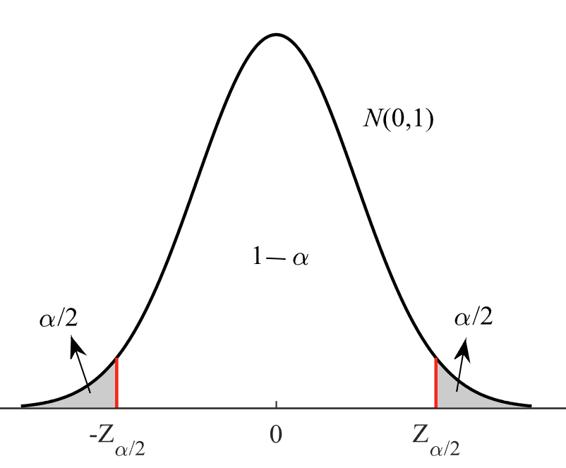

Size-dependent nonlinear vibration analysis of carbon nanotubes conveying multiphase flow
International Journal of Mechanical Sciences, 115-116, pp.723-735, 2016. Journal Article

Abstract
An understanding of the dynamic behavior of the carbon nanotubes (CNTs) conveying fluid is very important for exploring the applications in nanoscale systems. Due to the molecular network disruption, the passing flow has multiphase nature. In this regard, the nonlinear vibration behavior of the CNT conveying multiphase flow is investigated by considering the small scale effects based on the nonlocal theory. The effect of the multiphase flow on the CNT's vibration behavior is modeled by the resultant random uncertainty in the external excitation along with considering the slip flow velocity profile. After extraction of the governing equation by implementing Hamilton's principle and discretizing it by the Galerkin method, the resulting equations are solved numerically. Due to the stochastic nature of the differential equations, the statistical parameters of the response have been obtained by Monte–Carlo simulation. By studying the deflection of the midpoint of the CNT and also considering corresponding upper and lower limit band (confidence interval), extended results of uncertainty effects have been obtained. Moreover the effect of nonlocal parameter, flow velocity and Knudsen number on the statistical dynamic behavior of the system have been investigated. The results show that as the molecular behavior of the flow increases the uncertainty in the system and the confidence interval increase.